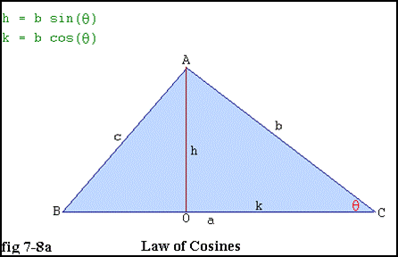
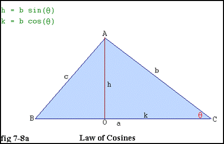

Law of Cosines
When we know two sides of a triangle & their included angle... SAS, then we can find the $3^{rd}$ side using the Law of Cosines.$\table a^2=b^2+c^2-2bc\cosA; b^2=a^2+c^2-2ac\cosB; c^2=a^2+b^2-2ab\cosC$
If we know sides $a\text" & "b$ and their included angle $θ$, then
$c^2=a^2+b^2-2ab\cosC$

*Note* Pythagorean Theorem - when $C$ is a right angle $(\cos90°=0)$, then $c^2=a^2+b^2$
$c^2=a^2+b^2-2ab\cosC$

*Note* Pythagorean Theorem - when $C$ is a right angle $(\cos90°=0)$, then $c^2=a^2+b^2$
ex) In $∆ABC$, side $b=8\text"cm, "c=10\text", & angle "A=60°$. Find a in simplest radical form & rounded to the nearest tenth.
$\table a^2=b^2+c^2-2bc\cosA; a^2=8^2+10^2-2(8)(10)\cos60°; a^2=64+100-160(1/2); a=√{84}; a=2√{21}cm; a=9.2cm$
$\table a^2=b^2+c^2-2bc\cosA; a^2=8^2+10^2-2(8)(10)\cos60°; a^2=64+100-160(1/2); a=√{84}; a=2√{21}cm; a=9.2cm$
We can then use the Law of Sines to find the missing angle
| $\table a/{\sinA}=b/{\sinB}; {9.2}/{\sin60}=8/{\sinB}; \sinB=({8\sin60}/{9.2}); ∠B=\sin^{-1}({8\sin60}/{9.2}); ∠B=48.9°;$ | $\table ∠C=180°-∠A-∠B; ∠C=180°-60°-48.9°; ∠C=71.1°$ |
| $\table ∠C=180°-∠A-∠B; ∠C=180°-60°-48.9°; ∠C=71.1°$ | |